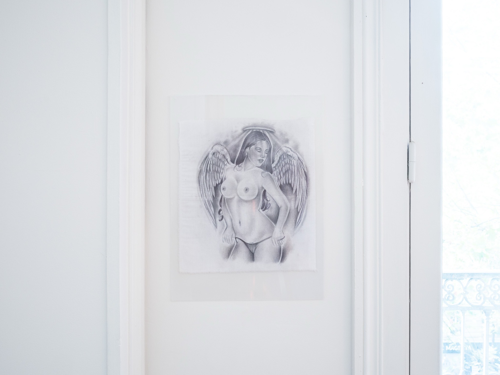
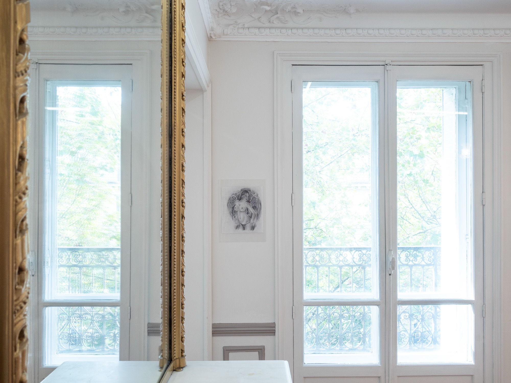

Pouria Khojastehpay
Entrée 011 · SELF™
Au registreSELF™ · KR02
Œuvres — 1 entrée

Pouria Khojastehpay, Sans titre (origine : Arizona State Prison Complex), 2026. Encre sur coton, 30 × 26.5 cm. Courtoisie de l'artiste. Kramer.

Pouria Khojastehpay, Sans titre (origine : Arizona State Prison Complex), 2026. Encre sur coton, 30 × 26.5 cm. Courtoisie de l'artiste. Kramer.
Demander la fiche →